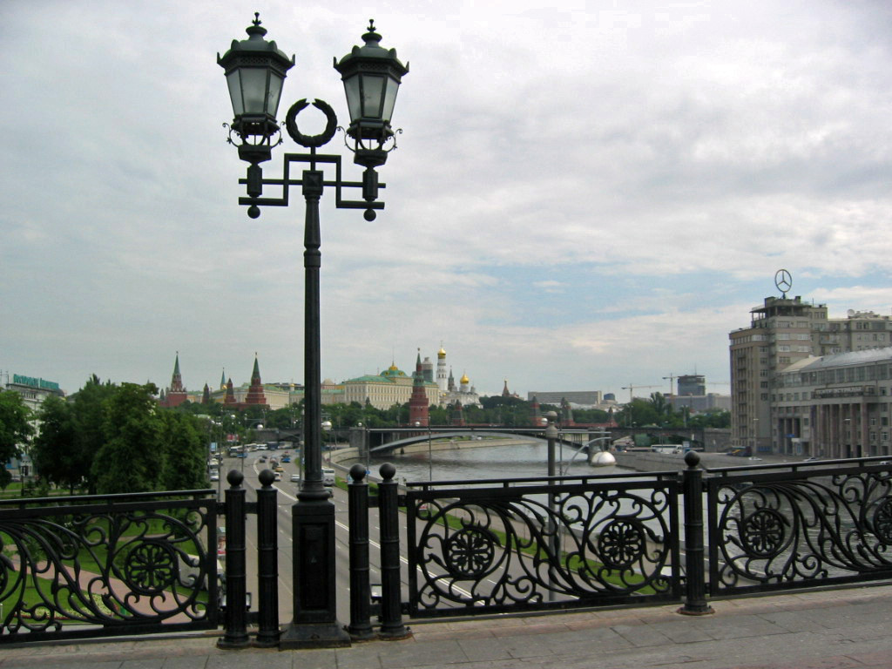

Dimanche 18/06/06 11 :00 Moscou
Tour de ville panoramique : Vue de la cathédrale du Christ Sauveur : La Moskova, le Grand Pont de Pierre, le Kremlin avec le Grand Palais, la cathédrale de lAssomption. Létoile Mercedes domine la ville en lieu et place de lEtoile Rouge.